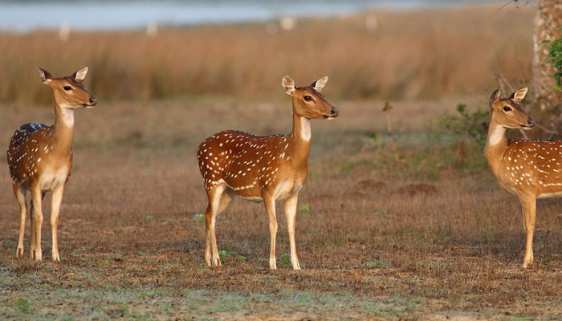
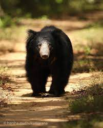

Wilpattu National Park is a gem nestled in the northwestern part of Sri Lanka, renowned for its untamed wilderness and diverse wildlife. Spread across nearly 1,500 square kilometers, it stands as the largest national park in the country, encompassing a mix of dense forests, scrublands, and shimmering lakes. What sets Wilpattu apart is its unique topography, characterized by so-called "villus" or natural lakes that dot the landscape, adding a touch of serenity to the rugged terrain. The park is a haven for nature enthusiasts and wildlife lovers, offering a chance to spot a variety of species, including majestic elephants, elusive leopards, sloth bears, and a plethora of birdlife. Its name, Wilpattu, is derived from the numerous "villus" that contribute to the park's scenic beauty. A visit to Wilpattu is not just a safari; it's a journey into the heart of Sri Lanka's wild side, where each turn reveals a new chapter in the untold story of nature's wonders.
The wildlife at Wilpattu National Park is a mesmerizing spectacle, showcasing the rich biodiversity that thrives within its expansive boundaries. The park is renowned for being home to a diverse array of species, from the regal Sri Lankan elephant that gracefully roams the landscape to the elusive and majestic leopard, which stealthily maneuvers through the dense vegetation. Wilpattu's scrublands and forests provide sanctuary to an abundance of wildlife, including spotted deer, sloth bears, water buffaloes, and a myriad of bird species, making it a paradise for birdwatchers. The park's numerous "villus" or natural lakes serve as watering holes for these creatures, creating picturesque scenes of wildlife congregating against the backdrop of the serene water bodies. Wilpattu National Park, with its untamed beauty and thriving ecosystems, offers a captivating glimpse into the intricate tapestry of nature in Sri Lanka.
 Exploring Wilpattu National Park is not just a passive experience; it's an immersive journey filled with exciting activities that bring you closer to nature's wonders. The most popular activity is undoubtedly the thrilling safari, where visitors embark on jeep rides through the park's diverse terrain, eagerly anticipating encounters with majestic elephants, stealthy leopards, and a myriad of other wildlife species. The park's numerous trails offer fantastic opportunities for nature walks, allowing enthusiasts to soak in the sights and sounds of the untamed wilderness on foot. Birdwatching is another favorite pastime, given the park's status as a haven for avian diversity. The network of "villus" invites wildlife enthusiasts to set up camp near these natural lakes, providing a front-row seat to observe the fascinating behaviors of the park's inhabitants. Photography enthusiasts can capture the breathtaking landscapes and charismatic wildlife that define Wilpattu. Whether it's the thrill of a safari, the tranquility of a nature walk, or the patience of birdwatching, Wilpattu National Park offers a plethora of activities for those seeking an unforgettable adventure in the heart of Sri Lanka's wild beauty.